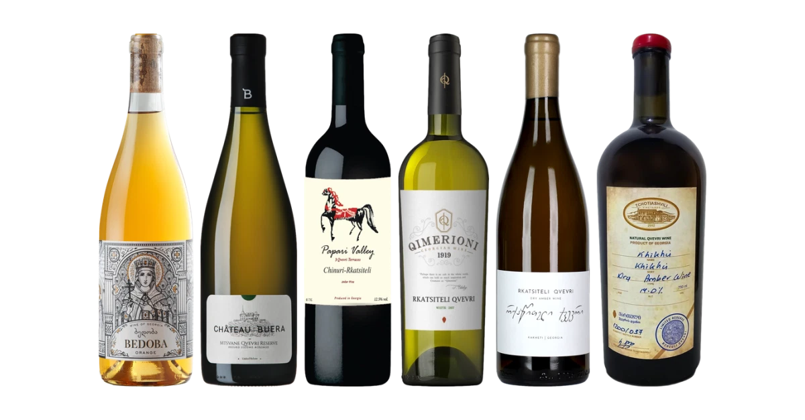
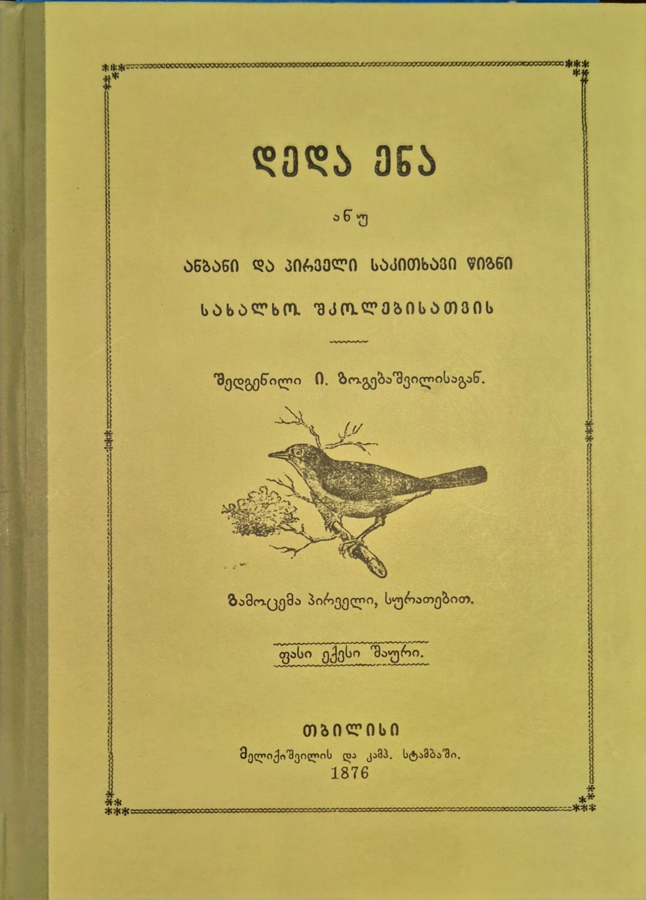
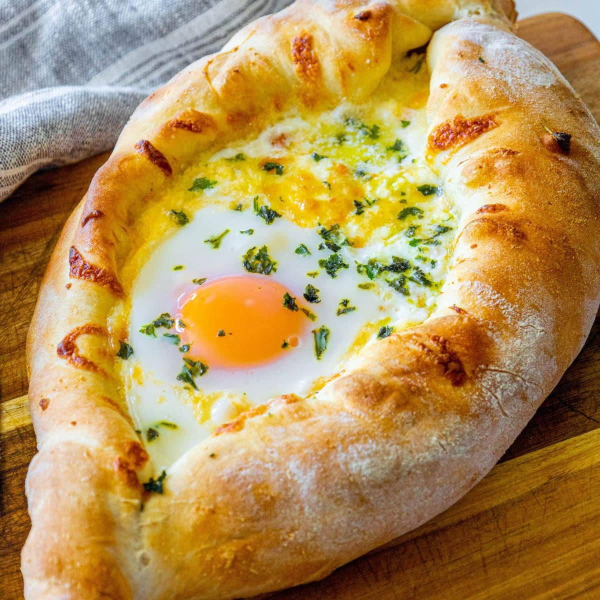

About Georgian History
Wine:
People in Georgia started making wine in big clay pots 8,000 years ago.
They are called the birthplace of wine.

King Tamar:
around 800 years ago, Queen Tamar ruled Georgia during its best years.
She was so powerful they actually called her "King Tamar"

Deda ena:
Deda ena is the famous textbook created by Iakob Gogebashvili in 1876
that taught generations of Georgian children how to read and write their native language.

Georgian Food:
Georgian food is known for its unique flavors and ingredients.
Some popular dishes include Khachapuri (cheese-filled bread) and Khinkali (dumplings).
